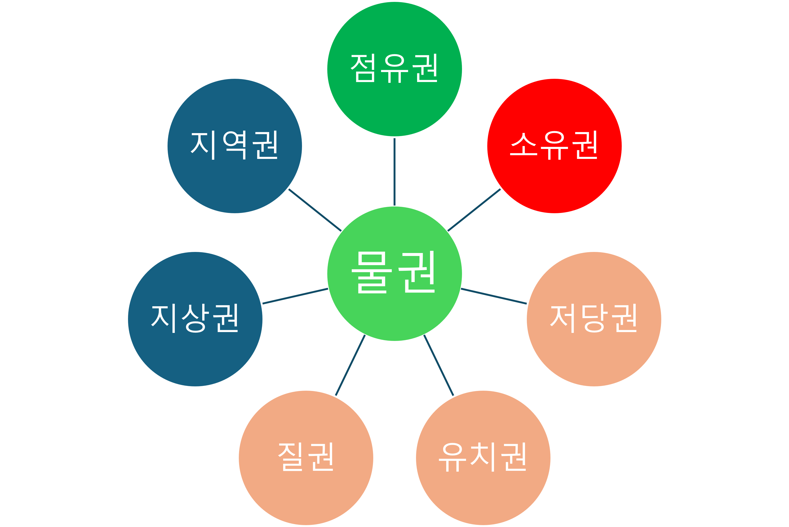
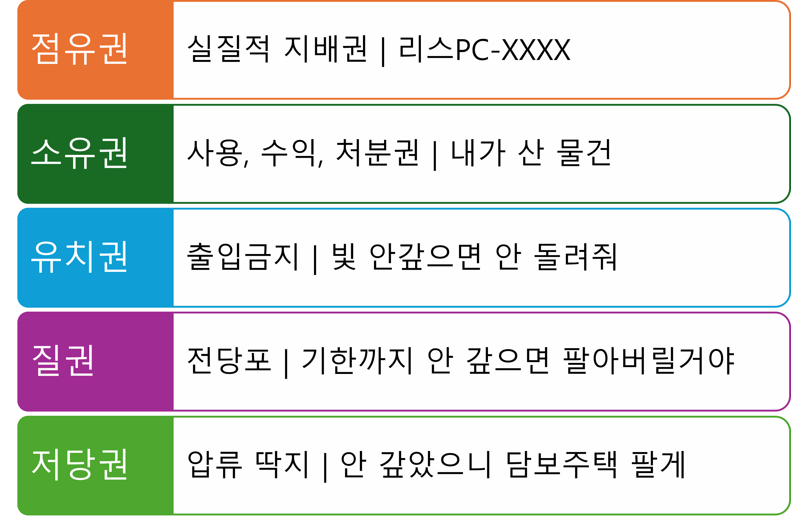
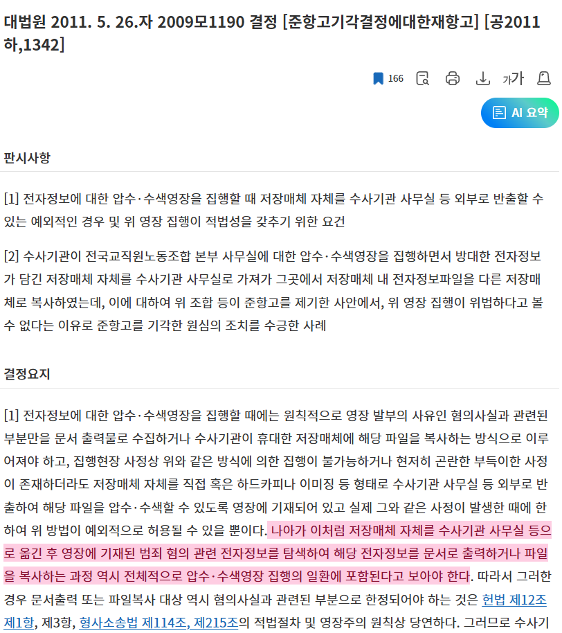
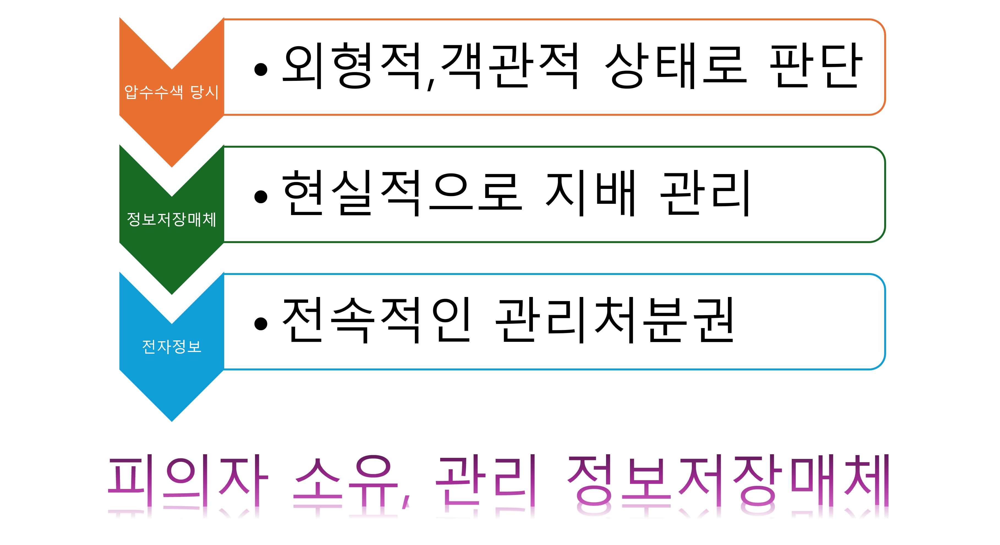
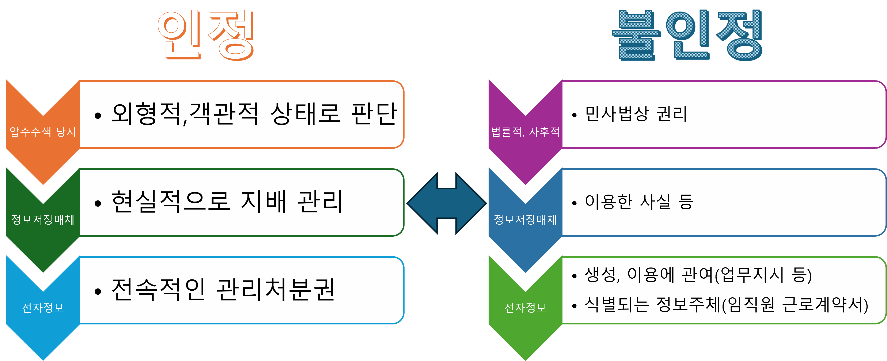
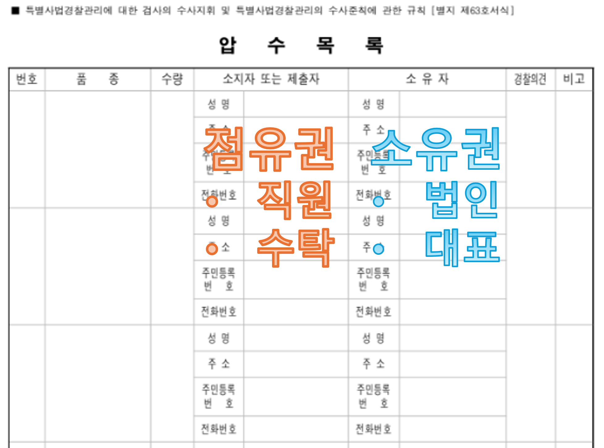

- 1. 물건에 대한 기본권을 이해한다
- 2. 수사의 기본권 제한과 기본권 방어를 위하 설계된 수사상 절차를 이해한다
Chapter
01
물건과 기본권
Fundamental rights
서류는 누가 참여하여 서명하는가









누구에게 서명을 받을지 이해하기
참고자료는?
임의제출물 압수에 관한 연구(서울대학교, 2022, 소유지와 제출자의 관계 등) , 디지털 증거와 범죄사실의 관련성에 관한 연구(서울대학교, 2015, 디지털 증거가 압수 대상인지 등), 민법상 물건에 관한 연구(성균관대학교, 2004, 유체물과 무체물의 구분 등)
무엇을 이해하여야 하는가?
압수수색은 영장에 명시된 대상을 제한적으로 수행하여야 한다. 압수수색은 헌법상 국민에게 보장되는 기본권을 침해하는 행위이기 때문이다. 이 때 기본권 보장을 위해 방어권을 보장하여야 하며, 이는 평온 유지를 준수하고 압수수색 과정 전반의 참여권 보장 및 압수목록 교부 등의 의무이다.
질문을 환영합니다 · Q&A